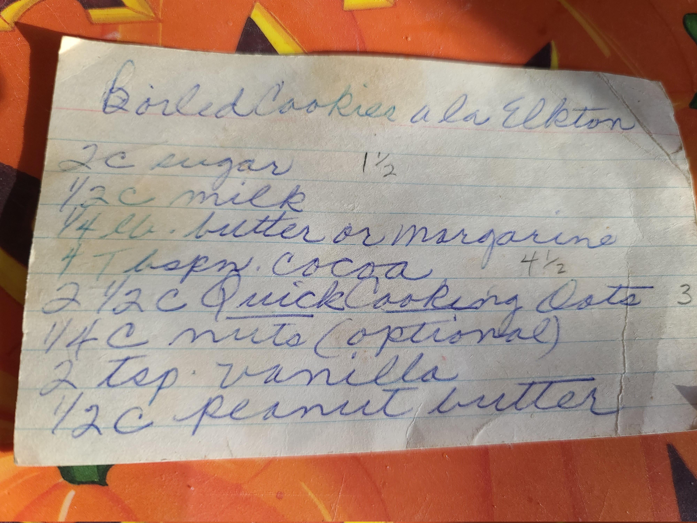
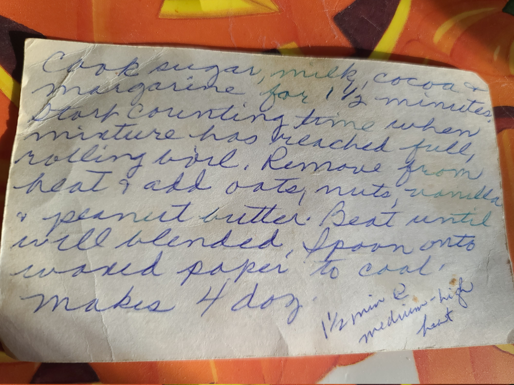

Boiled cookes ala Elkton


Description
A no bake cookie recipe written down by my grandmother and edited by my mother. It was written in Elkton Tenessee some time in the 1960s.
Ingredients
- 2 cups of sugar (1, 1/2)
- 1/2 cup of milk
- 1/4 cup butter
- 4 tablespoons of cocoa, (4, 1/2)
- 2, 1/2 cups of quick cooking oats, (3)
- 1/4 cup of nuts (optional)
- 2 teaspoons of vanilla
- 1/2 cup of peanut butter
Steps
- Cook sugar, milk, cocoa and butter for 1, 1/2 minutes (at medium high heat). Start counting time when mixture has reached full, rolling boil.
- Remove from heat, add oats, nuts, vanilla and peanut butter.
- Beat until well blended.
- Spoon onto waxed paper to cool. Maxes 4 dozen.